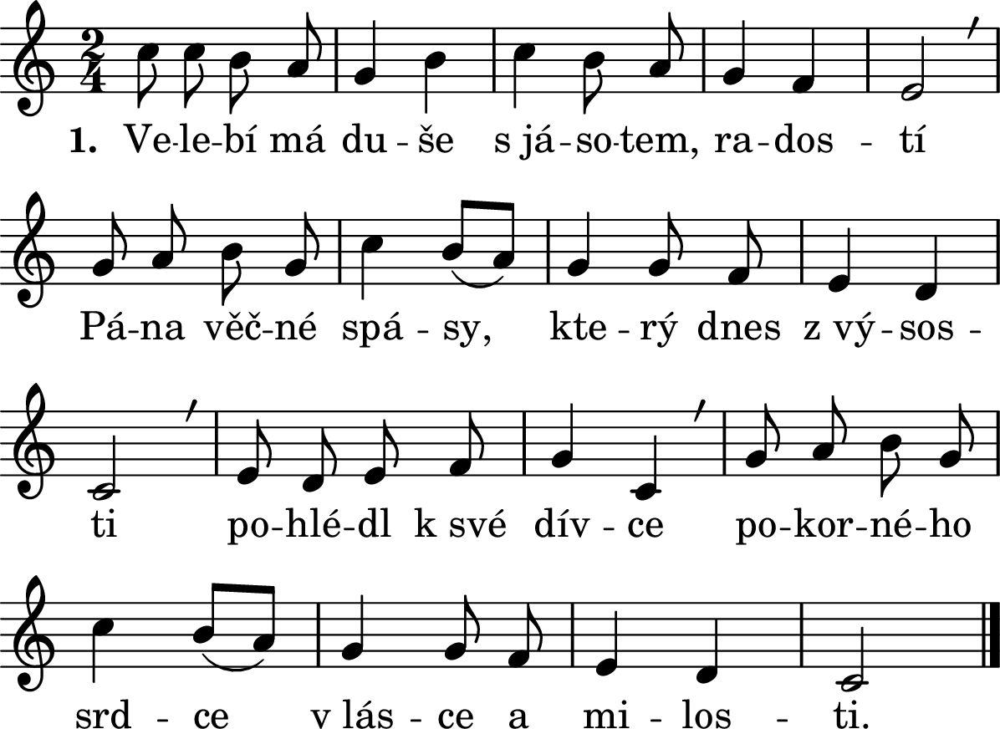

23. květen 2021
SESLÁNÍ DUCHA SVATÉHO
slavnost
Druhé nešpory
Bože, pospěš mi na pomoc.
Slyš naše volání.
Sláva Otci i Synu i Duchu Svatému,
jako byla na počátku, i nyní i vždycky a na věky věků. Amen. Aleluja.
HYMNUS
1. Duchu tvůrce, přijď, navštiv nás,
Plamen svůj v srdci nám zapal zas.
Tys pramen živý, lásky žár,
Konej divy dej nám své lásky dar.
2. Duchu svatý, Tys darů plná studna má,
Tys naplnění, tys jediná spása má.
Tys králem v srdcích, též i v mém,
Tak sestup na nás a dej lásku všem.
R: Přijď duchu svatý, veď nás dál,
Přijď, otevři srdce dokořán!
Už cítím to, jak přicházíš,
už nastal čas, kdy zazáříš,
Už přišla chvíle vítězství,
Už neznám pláč a neštěstí,
ty jsi Pán!
3. Duchu lásky, zapal svůj oheň v nás,
Na všechny otázky ty odpověď máš,
Nenech mě tápat, já chci v naději stát,
Do rukou tvých svůj život chci dát.
ŽALMY
1. ant. Duch Páně naplňuje celý svět, aleluja.
1Hospodin řekl mému Pánu: †
„Seď po mé pravici, *
dokud nepoložím tvé nepřátele za podnož tvým nohám.“
2Žezlo moci ti podává Hospodin ze Siónu: *
„Panuj uprostřed svých nepřátel!
3Ode dne zrození je ti určeno vládnout v posvátném lesku: *
zplodil jsem tě jako rosu před jitřenkou.“
4Hospodin přísahal a nebude toho litovat: *
„Ty jsi kněz navěky podle řádu Melchizedechova!“
5Hospodin je po tvé pravici, *
potře krále v den svého hněvu.
7Cestou se napije z potoka, *
proto povznese hlavu.
Sláva Otci i Synu *
i Duchu Svatému,
jako byla na počátku, i nyní i vždycky *
a na věky věků. Amen.
Ant. Duch Páně naplňuje celý svět, aleluja.
2. ant. Upevňuj, Bože, co jsi v nás vykonal, aleluja.
1Když vytáhl Izrael z Egypta, *
Jakubův dům z cizáckého lidu,
2stal se Juda Boží svatyní, *
Izrael Božím panstvím.
3Moře to vidělo a prchlo, *
Jordán se obrátil nazpět,
4Hory poskočily jako berani, *
pahorky jako jehňata.
5Co je ti, moře, že prcháš, *
Jordáne, že se obracíš nazpět,
6hory, proč poskakujete jako berani, *
pahorky, proč skáčete jako jehňata?
7Země, třes se před Pánem, *
před Bohem Jakubovým,
8jenž mění skálu v bažinu, *
křemen v prameny vod.
Sláva Otci i Synu *
i Duchu Svatému,
jako byla na počátku, i nyní i vždycky *
a na věky věků. Amen.
Ant. Upevňuj, Bože, co jsi v nás vykonal, aleluja.
3. ant. Všichni byli naplněni Duchem Svatým a začali mluvit, aleluja.
Aleluja postačí říkat na začátku a na konci každé strofy. Pokud se zpívá, vkládají se i ta, která jsou v závorkách.
Srov. Zj 19, 1-2.5-7
Aleluja.
1Vítězství, sláva a moc našemu Bohu,
(O. aleluja.)
2neboť jeho soudy jsou pravdivé a spravedlivé.
O. Aleluja. (Aleluja.)
Aleluja.
5Chvalte našeho Boha, všichni, kdo mu sloužíte
(O. aleluja.)
a kdo se ho bojíte, malí i velcí!
O. Aleluja. (Aleluja.)
Aleluja.
6Pán, náš Bůh vševládný, se ujal království!
(O. Aleluja.)
7Radujme se, jásejme a vzdejme mu čest!
O. Aleluja. (Aleluja.)
Aleluja.
Neboť nadešla Beránkova svatba,
(O. aleluja.)
jeho nevěsta se připravila.
O. Aleluja. (Aleluja.)
Sláva Otci i Synu *
i Duchu Svatému,
jako byla na počátku, i nyní i vždycky *
a na věky věků. Amen.
Ant. Všichni byli naplněni Duchem Svatým a začali mluvit, aleluja.
KRÁTKÉ ČTENÍ
Ef 4, 1-16
Jednota víry a křtu je úkolem, který se uskutečňuje mnohotvárným spolupůsobením věřících. „Každému z nás byla dána milost podle míry Kristova obdarování“ (v. 7). Co je naším úkolem? Budovat Kristovo tělo a dosáhnout lidské zralosti. (podle Josefa Zvěřiny)
ZPĚV PO KRÁTKÉM ČTENÍ
Duch Páně naplňuje celý svět. * Aleluja, aleluja.
Duch Páně naplňuje celý svět. * Aleluja, aleluja.
Všechno udržuje a obnovuje, promlouvá k lidem všech jazyků.
Aleluja, aleluja.
Sláva Otci i Synu i Duchu Svatému.
Duch Páně naplňuje celý svět. * Aleluja, aleluja.
KANTIKUM PANNY MARIE
Antifona ke kantiku Panny Marie: O letnicích se Duch Svatý zjevil apoštolům v ohni a naplnil je svými dary; poslal je do celého světa hlásat evangelium a vydávat svědectví: Kdo uvěří a dá se pokřtít, bude spasen, aleluja.
1. Velebí má duše s jásotem, radostí
Pána věčné spásy, který dnes z výsosti
pohlédl k své dívce
pokorného srdce v lásce a milosti.
2. Již od této chvíle zástupy národů
v neustálé chvále po světa obvodu
slaviti mě budou,
dívku Páně chudou, v radostném závodu.
3. Veliké mi věci Hospodin učinil,
Pán můj nejvýš svatý ve mně si zalíbil.
Duši bohabojné
dary nebes hojné od věků připravil.
4. Ramenem své moci on pyšné rozptýlil,
sesadil i mocné, pokorné povýšil.
Sytí všechny lačné,
bohaté a pyšné s prázdnou pryč propustil.
5. V lásce své se ujal národa svatého,
pamětliv je slibu praotcům daného,
že z Judova rodu
přijde spása lidu od Boha věčného.
Ant. O letnicích se Duch Svatý zjevil apoštolům v ohni a naplnil je svými dary; poslal je do celého světa hlásat evangelium a vydávat svědectví: Kdo uvěří a dá se pokřtít, bude spasen, aleluja.
PROSBY
pro díky: Díky tobě, Panepro chvály: Chvála tobě, Pane
pro prosby/přímluvy: Prosíme tě, vyslyš nás.
MODLITBA PÁNĚ
MODLITBA
REGINA CÆLI

Regína cæli, * lætáre, alleluja,
quia quem meruísti portáre, alleluja,
resurréxit, sicut dixit, alleluja,
ora pro nobis Deum, alleluja.